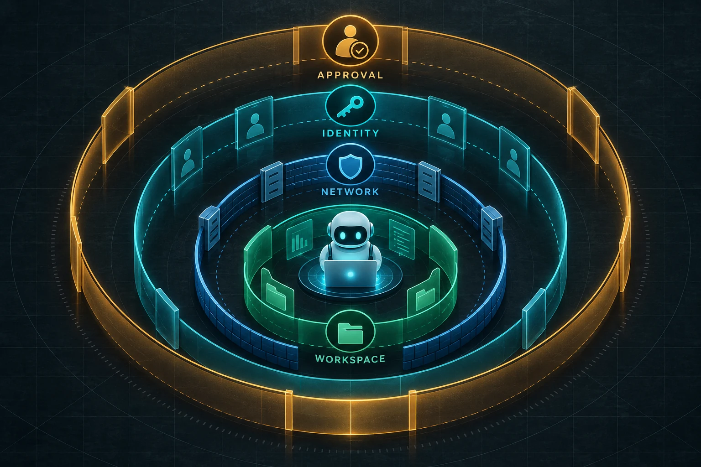

Another permission popup will not contain your AI agent
Published September 28, 2026 · HomeForge
If an AI agent asks for approval every thirty seconds, users eventually stop reviewing and start clicking. The safety feature becomes a reflex test.
The practical alternative is containment: decide what the agent can reach before it starts, then reserve human approval for the small number of actions whose consequences cannot be safely bounded.

The problem with approving commands one by one
Approval dialogs can be useful when the operator understands the proposed action and has enough context to judge it. They work poorly when prompts are frequent, vague, or presented to someone who cannot assess the underlying command.
Anthropic reports that after adding an operating-system sandbox to Claude Code, permission prompts fell by 84%. The specific number describes Anthropic's implementation, not a universal benchmark. The design lesson is broader: a reliable boundary can remove routine prompts while preserving review for actions that leave the boundary.
Four containment layers for a small agent
1. Workspace boundary
Give the agent a dedicated project directory. Allow writes there and deny writes elsewhere. Mount sensitive folders only when the task requires them, preferably read-only. A repository review should not automatically expose a password manager export, tax records, or every other project on the machine.
2. Network boundary
Start with no outbound network access. Add only the destinations the task needs. Separate read-only research from authenticated sessions. A browser agent that needs public documentation does not automatically need an already signed-in email or cloud-storage tab.
Network policy also limits exfiltration. If private data enters the runtime but the runtime can contact any host, a single manipulated tool call may transmit it through a permitted-looking request.
3. Identity boundary
Avoid handing the agent a user's full, long-lived authority. Use a separate service identity, narrow scopes, and short-lived credentials. Keep the original credential in the host or credential broker and issue a revocable token for the active session.
The permission should match both the task and destination. Reading one repository does not imply permission to administer an organization. Drafting a post does not imply permission to publish it from every connected account.
4. Action boundary
Require a review for actions that remain consequential even inside the sandbox: publishing, sending, deleting, spending, changing access, deploying, or controlling a physical device.
Show the reviewer the exact proposed action: destination, identity, arguments, affected data, and whether the operation can be reversed. Save the approval decision with the eventual receipt.
What still needs model-level defenses
Containment does not decide whether a generated answer is correct. Use model instructions, classifiers, and evals to improve behavior inside the boundary. Test known failure modes and review traces. But treat those controls as one layer rather than a wall.
Anthropic's engineering account says model defenses shape what an agent tends to do, while deterministic environment controls limit what it can do. OpenAI similarly recommends combining structured data flow, guardrails, approvals, and evaluations rather than relying on a single prompt-injection detector.
A practical default policy
For a coding or content agent, a workable default is:
- read the active workspace;
- write only inside that workspace;
- no network unless a task needs it;
- public-web research in a session without private account access;
- approval before uploading, publishing, deleting, spending, deploying, or changing permissions;
- exact receipts for completed external actions;
- reconciliation before retrying an interrupted or ambiguous submission.
Then add permissions for a specific task rather than enabling a broad permanent profile.
How to decide what deserves approval
Ask two questions:
- Can a hard boundary make the worst plausible result small and reversible?
- Can the reviewer understand the proposed action well enough to make a real decision?
If the first answer is yes, automate inside the boundary. If the second answer is no, improve the presentation or keep the action unavailable. A confusing popup is not meaningful oversight.
Sources
- Anthropic: How we contain Claude across products, for environment containment, permission-prompt reduction, external-content risk, and layered defenses.
- OpenAI API: Guardrails and human review, for tool-level review, exact action context, resumable approval state, and fail-closed behavior.
- OpenAI API: Safety in building agents, for combining tool approvals, structured data, guardrails, and evals.
Get the free Starter Kit →